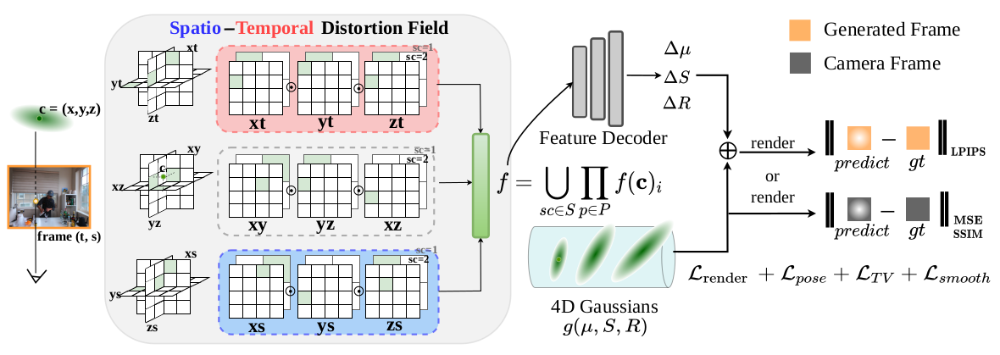

Drag the divider to compare our method against baselines.
High-quality 4D reconstruction enables photorealistic and immersive rendering of the dynamic real world. However, unlike static scenes that can be fully captured with a single camera, high-quality dynamic scenes typically require dense arrays of tens or even hundreds of synchronized cameras. Dependence on such costly lab setups severely limits practical scalability. The reliance on such costly lab setups severely limits practical scalability. To this end, we propose a sparse-camera dynamic reconstruction framework that exploits abundant yet inconsistent generative observations. Our key innovation is the Spatio-Temporal Distortion Field, which provides a unified mechanism for modeling inconsistencies in generative observations across both spatial and temporal dimensions. Building on this, we develop a complete pipeline that enables 4D reconstruction from sparse and uncalibrated camera inputs. We evaluate our method on multi-camera dynamic scene benchmarks, achieving spatio-temporally consistent high-fidelity renderings and significantly outperforming existing approaches.

Method overview. Given a generated frame at temporal index t and pose index s, each 4D Gaussian at c=(x,y,z) is projected onto the planes of the Spatio-Temporal Distortion Field to obtain deformation features, which are then decoded by a small MLP to produce the deformation values. We use separate photometric losses for real and generated frames, and additionally introduce regularization terms on pose, feature plane, and spatial smoothness to enhance optimization stability.
@article{pan2026sparsecam4d,
title={SparseCam4D: Spatio-Temporally Consistent 4D Reconstruction from Sparse Cameras},
author={Pan, Weihong and Zhang, Xiaoyu and Zhang, Zhuang and Ye, Zhichao and Wang, Nan and Liu, Haomin and Zhang, Guofeng},
journal={arXiv preprint arXiv:2603.26481},
year={2026}
}